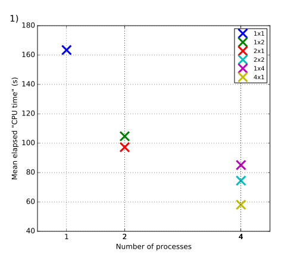
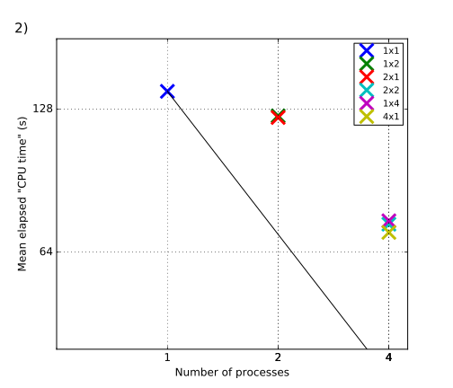
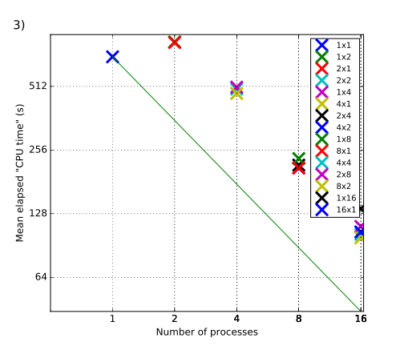

All results shown were produced with ROMS (Shchepetkin and McWilliams, 2005), compiled with Open MPI using gfortran.



The preliminary test above allow a rough estimate of the computational and monetary costs involved in a realistic study. By monetary cost we mean the financial cost of renting AWS’ hardware to conduct a study of a given computational cost. As an example we consider Kumar et al. (2015), who validate the midshelf and surfzone circulation generated by a numerical model against observations. They use a coupled ROMS-SWAN model and compare it to observations from the 2006 Huntington Beach (San Pedro Bay, California, U.S.A.) experiment. We assume that such studies, which investigate the transport processes directly adjacent to the coast, are particularly important for commercial applications. Whether or not it is actually technically feasible to conduct such a highly complex state-of-the-art simulation on AWS’ cloud infrastructure, is not shown here. Instead, the objective here is to gain a (very rough) order-of-magnitude estimate of the involved cost, assuming technical feasibility.
The numerical experiment of Kumar et al. (2015) consists of the following components:
which are coupled by the open-source Coupled Ocean-Atmosphere-Wave-Sediment (COAWST) Transport model (Warner et al., 2008; Woods Hole Coastal and Marine Science Center, 2016), which couples an atmospheric (Weather Research and Forecasting model, WRF), wave (SWAN), three-dimensional circulation and stratification (ROMS) and sediment transport models. COAWST is integrated by the Model Coupling Toolkit (MCT, UChicage Argonne 2016) to exchange data fields between the models. They use the following nested grids:
As boundary conditions (forcing fields) they use
The L0-L4 domains are one-way nested. Daily L0 solutions are used as a lateral boundary condition for L1. L1 (L2) solutions are used as L2 (L3) lateral boundary conditions every .
The model is spun up for with climatological surface forcing.
For time-stepping the shelf grids, Kumar et al. (2015) state that
Kumar et al. (2015) do not report the time step used in their L0-L3 models. Assuming an ocean depth of , the barotropic time step is constrained by the CFL condition to roughly for L0 and L1, and for L2 and L3, according to the simplified formula (which does not hold strictly in this practical application)
| (1) |
where () is the barotropic time step (lateral grid spacing), and is gravity. Assuming that the baroclinic time step is a factor of 10-20 longer than the barotropic time step, this yields (L0, L1) and (L2, L3), respectively. For a simulation, time steps are required. Clearly, these estimates are very rough. For example, to account for the shallower depth of the L2 and L3 grids, one may assume a depth decrease by a factor of 10, and accordingly increase by a factor of 3 for L2 and L3.
So far, no results are available measuring execution time for grids of similar size as L0-L3. The closest matching available result is for benchmark2, with a grid size of xx data points, which is roughly 1/10 of the number of spatial data points in L0-L3. Note that it is always possible to assume identical physical dimensions of the grid spacing (including the temporal lattice) between benchmark2 and L0-L3, since the benchmarking results are independent on physical dimensions (but depend only on the amount of data points).
Hence, in the following we may assume and is similar for benchmark2 and L0-L3, keeping in mind that the amount of processed data is an order of magnitude less than for each of the 4 experiments L0-L3. Fig. 3 shows that benchmark2 takes roughly to complete on a 16-core c4_4xlarge instance using the gfortran compiler. The number of time steps integrated in benchmark2 is 200, i.e. about 2 time steps per second are processed. It follows that a spin up time for benchmark2 takes roughly to complete.
The instance type c4_4xlarge is currently (2017/01/12) priced at $0.796 per hour for on-demand use, resulting in a total of $
Carton, J.A., Giese, B.S., 2008. A reanalysis of ocean climate using simple ocean data assimilation (soda). Monthly Weather Review 136, 2999–3017.
Kumar, N., Feddersen, F., Uchiyama, Y., McWilliams, J., OReilly, W., 2015. Midshelf to surfzone coupled roms–swan model data comparison of waves, currents, and temperature: Diagnosis of subtidal forcings and response. Journal of Physical Oceanography 45, 1464–1490.
Shchepetkin, A.F., McWilliams, J.C., 2005. The regional oceanic modeling system (roms): a split-explicit, free-surface, topography-following-coordinate oceanic model. Ocean Modelling 9, 347–404.
UChicage Argonne, 2016. Modeling Coupling Toolkit (MCT) Software. External link (Accessed on Jan. 11, 2017).
Warner, J.C., Perlin, N., Skyllingstad, E.D., 2008. Using the model coupling toolkit to couple earth system models. Environmental Modelling & Software 23, 1240–1249.
Woods Hole Coastal and Marine Science Center, 2016. COAWST: A Coupled-Ocean-Atmosphere-Wave- Sediment Transport Modeling System. External link (Accessed on Jan. 11, 2017).